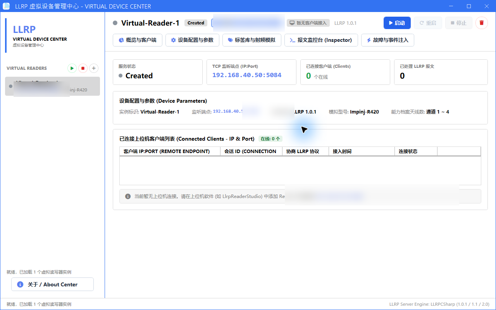

06 / PROTOCOL EMULATION TOOL
Virtual Device Manager User Manual
Virtual Device Manager is a standalone Windows WPF utility powered by the LlrpDevice.Virtual.Hosting engine. It spawns compliant TCP/LLRP virtual reader instances on port 5084 with customizable Tag Pools and live packet inspection for offline client development.
1. Tool Overview & Positioning
Emulates full TCP/LLRP network endpoints listening on physical sockets (default 5084), responding accurately to GET_READER_CAPABILITIES, ADD_ROSPEC, ENABLE_ROSPEC, and START_ROSPEC messages.
2. Installation & Launch
Download LlrpVirtualDeviceManager-v2.0.3-win-x64.zip, extract, and run LlrpVirtualDeviceStudio.exe.

3. Virtual Profiles & Configuration
- Click New Profile, configure Host (e.g.
127.0.0.1) and port (e.g.5084). - Select protocol version (LLRP 1.0.1 / 1.1 / 2.0) and model (Standard LLRP or Impinj R420).
- Click Start Instance to begin listening for incoming client connections.
4. Tag Pool & RF Simulation
- Custom Tag Sets: Generate randomized or import predefined Hex EPCs, TIDs, and User memory banks.
- Antenna Visibility: Assign tags to specific antennas (Antenna 1~4) and simulate dynamic in-sight / out-of-sight motion.
- Jitter & Noise: Enable Gaussian noise on Peak RSSI and RF Phase values to simulate real-world physics.
5. Live Packet Inspector & Fault Injection
Features a real-time binary and parsed XML/JSON packet console. Inject network timeouts, connection drops, and error responses to test client fault tolerance.
6. Client Integration Steps
- Start a virtual instance listening on
127.0.0.1:5084. - In LLRP Reader Studio or LlrpReaderManager, add
127.0.0.1:5084. - Click Probe, then Activate.
- Open Inventory and click Start to receive synthetic tag report streams.
7. Architectural Boundary
LLRP_VIRTUAL_SCENARIO is an internal mock mode for unit tests.